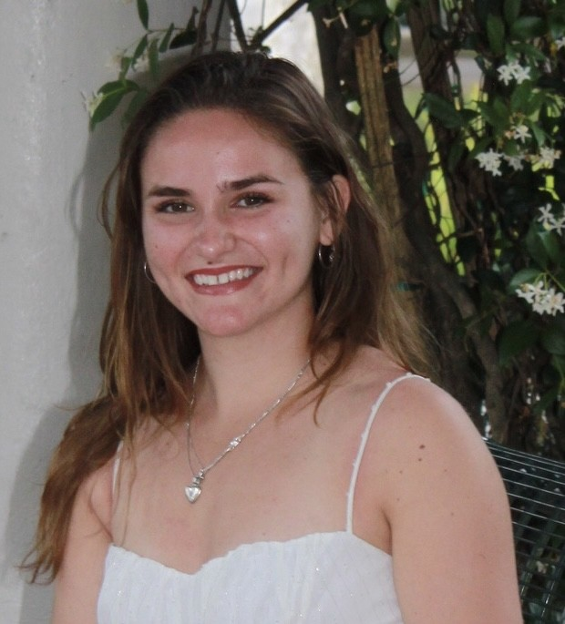

Welcome!
I am a PhD candidate at the Univeristy of South Florida. This website helps show my accomplishments and experience in research.
About Me

I am Riley Phillips, a PhD student at the University of South Florida (USF) advised by Dr. Marc Lajeunesse. My main interests in research is animal behavior and human-animal interactions. Studying animal behavior helps us better understand the reasoning for certain actions and the relationships between two organisms. By tying humans into the equation, we can test whether human exposure alters an organism's behavior and/or space use especially on the skirts of urban areas. This enables us to know how we are impacting the surrounding environment, highlighting what we either need to change or act upon to make wildlife comfortable and urban areas safe (e.g., enforcing bear-proof trashcans).
In my free time, I enjoy hiking and collecting insects where will either pin or put the insects in resin. My collection includes insects from most places I have traveled to, so I am very proud of it!
Research
Undergraduate
I attended USF for my undergrad, and graduated with a degree in biology with an animal concentration and a minor in environmental science and policy in 2024.
During my time as an undergrad, I participated in a research project with Dr. Kathleen Scott in the genomics course. This project analyzed the genomes of select autotrophic Bacteria who participate in the reductive citric acid (rTCA) and reverse oxiative TCA (roTCA) cycles to see their adaptations towards these pathways. Within these cycles, the enzymes involved were analyzed individually on their sequence and phylogeny. I was responsible for two enzymes, using NCBI (National Center for Biotechnology Information) to collect their sequences, and protein BLAST and the software, Mega, to align the protein sequences. Once aligned, phylogenetic analysis was done to discover the *Bacteria* species who possess these enzymes to test whether this adaptation is described by the phylogeny. This project was written and published in the journal, *FEMS Microbes*, in 2026.
Graduate
I started my PhD program in Integrative Biology at USF in Fall 2024 under Dr. Marc Lajeunesse. My chapters revolve around the behavior of filial cannibalism, where parents consume their offspring. My first chapter is a meta-analysis and synthesis on indirect predatory effects, non-lethal impacts predators impose on prey such as a change in behavior, on filial cannibalism frequency. The synthesis portion will help communicate what future studies should test, how they should do so, and what they need to report. My second chapter will be applying the research questions from my first chapter onto ring-legged earwigs as upon completing the meta-analysis and synthesis, I am aware what the future steps and methods need to be. During my PhD program, I have been rearing and mating earwigs in lab while keeping track of their phylogeny. For my third chapter, it will also be a meta-analysis and synthesis on filial cannibalism; however, it is not certain what the research questions will be yet.
Behavior Research at ZooTampa at Lowry Park
I have been working with the behavior research team at ZooTampa at Lowry Park since 2023.
Conferences
USF Graduate Research Symposium
Due to this symposium being taken place in the middle of completing my first chapter in my PhD program, I presented a poster on the methods used and prelimary results from my meta-analysis on indirect predatory effects on filial cannibalism frequency. The methods included my study collection, screening and extraction of my meta-analysis; whereas, my preliminary results included findings from the synthesis portion of my meta-analysis.
Florida Entomological Society Conference
I did an oral presentation on my first chapter of my PhD program, a meta-analysis on indirect predatory effects on filial cannibalism frequency. Although my meta-analysis includes all species, I narrowed down my topic and results to just arthropods to better fit the audience. This 10 minute presentation discussed the background, mehthods, and results of this meta-analysis within only arthropods; including whether there is a difference in filial cannibalism rate with guardians showing either biparental or uniparental care when exposed to a predator.
Work Experience
Behavior Research Internship at Zootampa at Lowry Park
Email: rileyp@usf.edu
Teaching Assistant at USF
During my PhD program at USF, I have been working as a Teaching Assistant (TA) where I teach undergraduate students in a lab setting. The lab courses I have taught include Biology II Diversity, Human Anatomy & Phsiology (HA&P) I and HA&P II labs. Each semester I teach two sections, each with 25 students in the course. In the 3 hour labs I teach the students the material, walk students through dissections and experiments, and am available whenever students have questions while completing their activities. Dissections include fetal pig, rat, cow eye, pig kidney, sheep heart, etc. to allow the students to get hands-on visuals when learning about topics such as the muscles and digestive tract. I additionally walk the students through experiments, such as blood typing and urinalysis, by discussing the materials used and the meaning of different results. In lab safety is my top priority; therefore, students are always told to be cautious about the tools they are using when dissecting and to always where proper attire, if anything of concern occurs proper paperwork is filled out. I handle my students grades in the gradebook, while also creating, holding, and grading their quizzess and exams/practicals. I make changes to the gradebook and send out announcements via Canvas to ensure the students are aware of what is expected of them and that there is propoer communictaion. I am available in and out of lab through both my email and office hours, making sure I respond in a timely-manner. I additionally serve as a trusted adult for my students by providing them a person to talk to about anything that may be risking their safety and level of comfort either in the lab or in their personal life, ensuring that I properly report anything necessary.
Publications
Scott, K. M., Walsh, D. P., Napier, L., Bohdanovska, M., Conde, Q., Machado-Olavarria, A. C., Madala, S., Meade, S. M., Nguyen, K. T., Nguyen, T., O’Malley, D., Palmer, H., Parbhoo, K. J., Pfent, A., Phillips, R., Busato, V. P., Rakhmonova, M., Ruiz, D., Small, E.,…Thakur, A. (2026). Evidence for ecological adaptation of reductive citric acid and reverse oxidative citric acid cycles based on a survey of genomes from autotrophic Bacteria. FEMS Microbes, 7. https://doi.org/https://doi.org/10.1093/femsmc/xtag016
Skills & Extracurriculars
Skills
- Microsoft Industry Certification
- Knowledge in R, BORIS, ZooMonitor, Excel, Mega, BLAST, and Microsoft
- Operating GoPro cameras and obtaining footage
- Communicating via radios
- Public speaking
- Operating decibal readers
- American Athletic Conference Honors Certificate
- AAC All-American Team Honors Certificate
Extracurriculars
During my undergrad at USF from 2020-2023, I was on both the D1 cross country team and track and field team. This experience enabled me to practice the skills of communicating with teammates, coaches, and trainers daily; collaborating with diverse teammates; time-management and dedication.
Also during my undergrad, I was in the USF Botany Club in 2023-2024. My responsibilities included gardening and painting statues within the garden to make the area more welcoming.
Contact
Email: rileyp@usf.edu